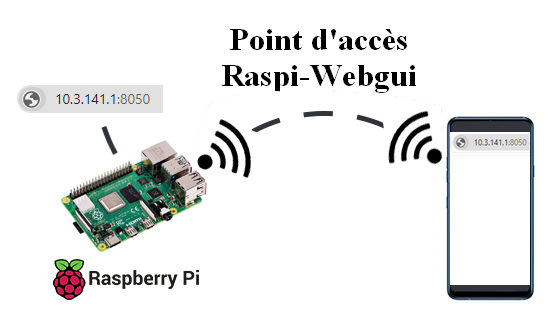

L’essentiel pour commencer#
Dans ce chapitre vous allez trouver toutes les informations concernant le montage, le cablage et la configuration du robot.
Le matériel :#
Le bras robot ARM-21N2
Nom |
Image |
Quantité |
Description |
|---|---|---|---|
Bras ARM-21N2 |
|
1 |
bras ARM-21N2 |
Raspberry pi |
|
1 |
Modèle Rpi 3 B+ |
Module PWM |
|
1 |
PCA 9685 |
Kit Pompe 5v |
1 |
|
|
Alimentation 220v AC - 12V DC |
|
1 |
Alimentation 220V - 12V 10A |
Réducteur 12V -5V |
1 |
Régulateur Réducteur 12v - 5v DC |


{kind=link}
{kind=link}
Le montage du robot :#
Le modèle 3D et les plans du bras ARM-21N2 sont accessibles en cliquant sur l’image.

La carte SD et l’image du Rpi#
Pour utiliser le robot, il sera nécessaire de copier l’image du RPI sur la carte SD ou de créer sa propre carte SD en suivant ce Tutoriel.
Le raspberry pi est configuré au niveau wifi et le package python est déjà dans l’image.
Utilsez une carte micro SD de 16Go montée dans un adaptateur SD
2- Copier l’image sur la carte SD :
Lancer Win32diskImager
Ouvrir le fichier .img
Selectionner la carte SD (Attention au choix du bon lecteur)
Appuyez sur Write
Le cablage du module PCA9685#
Le Raspberry Pi possède des broches réservées pour la communication I2C (GPIO2/GPIO3). Le module est muni d’un bus I2C et d’une entrée de puissance. Le bus I2C est branché comme ceci:
Broche GPIO3 ou SCL à la broche SCL du module
Broche GPIO2 ou SDA à la broche SDA du module
Broche 5V à la broche Vcc du module
Broche GND à la broche GND du module

Le montage du boitier contenant l’électronique#
Imprimer le boitier à partir des fichiers STL
Récupérer les fichiers sur ONSHAPE
Fixer le boitier imprimé en 3D sur le support.
{kind=link}
Effectuer les branchements.
{kind=link}
Monter le RPI dans le boitier en le calant bien sur les nervures prévues pour cela. Vérifier l’alignement de la prise RJ45
{kind=link}
Brancher l’alimentation 5V et visser le PCA99685
{kind=link}
Raccorder les servos moteurs
{kind=link}
port 0 : pivot
port 1 : bras1
port 2 : bras1 bis
port 3 : bras2
port 4 : bras3
port 5 : pince
port 6 : pompe
port 7 : électrovanne
Monter le capot de protection
{kind=link}
Brancher le RPI
La configuration réseau#
L’accès au RPI se fait en wifi en se connectant au point d’accès :
SSID: raspi-webgui
Password: ChangeMe
{kind=link}
Il n’y a rien d’autre à configurer.
Lorsque le RPI est branché, le système est entièrement fonctionnel en patientant environ 2 mn.
Dans un navigateur saisir l’adresse 10.3.141.1:8050
Vous pouvez utiliser n’importe quel média (mobile, tablette ou PC) pourvu qu’il soit connecté au point d’accès mentionné ci-dessus.
L’interface est maintenant accessible !